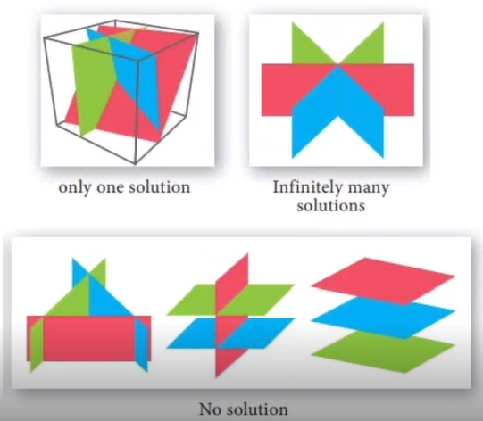

1 system of Linear equations
- Let us see some Systems of linear equations
- A company produce products N_1, \dots ,N_n for which resources R_1, \dots ,R_m are required. To produce a unit of porduct N_j, a_{ij} units of resources R_i are needed, where i=1,\dots ,m and j=1, \dots ,n.
The objective is to find an optimal production plan, i.e., a plan of how many units x_j of product N_j should be produced if a total of b_i units of resource R_i are available and (ideally) no resources are left over.
write system of equation of the same \left\lbrace \begin{array}{c} a_{11}x_1 + \dots +a_{1n}x_n =b_1\\ \vdots \\ a_{m1}x_1+\dots +a_{mn}x_n=b_n \end{array}\right. - John received an inheritance of \$12000 that he divided in three parts and invested in three ways: in a money market fund paying 3\% annual interest; in municipal bonds paying 4\% of annual interest; and in mutual fund paying 7\% of interest, john invested \$4,000 more in mutual funds than in municipal bonds. He earned \$670 in interest the first year.How much did john invest in each type of found \left\lbrace \begin{array}{c} x+y+z=12000\\ 0.03x+0.04y+0.07z=670 \\ -x+z=4000 \end{array}\right.\\
- solution of above question: x=3500,y=1000,z=7500
- A company produce products N_1, \dots ,N_n for which resources R_1, \dots ,R_m are required. To produce a unit of porduct N_j, a_{ij} units of resources R_i are needed, where i=1,\dots ,m and j=1, \dots ,n.

If there are more variables than equations than there might be infinitely many solutions.
If AX=b has infinitely many solutions then to find other solutions we find Y such that AY=b, then we can write A(X+Y)=b as A(X+Y)=AX+AY=AX because AY=0 here, X+Y is another solution here.
If AX=b and AY=0 then A(X+Y)=bParticular and general solutions
- 1. Find a particular solution to AX=b
- 2. Find all the solutions to AX=0
- 3. Combine the solution from step 1 and 2 to get the general solution
For Example, consider
{\left[\begin{array}{l l l}{1}&{0}&{8}&{-4}\\ {0}&{1}&{2}&{12}\end{array}\right]} {\left[\begin{array}{l}{x_1}\\ {x_2}\end{array}\right]}={\left[\begin{array}{l}{42}\\ {8}\end{array}\right]}
solution for AX=b (particular solution)
{\left[\begin{array}{l l l}{1}&{0}&{8}&{-4}\\ {0}&{1}&{2}&{12}\end{array}\right]} {\left[\begin{array}{l}{x_1}\\ {x_2}\end{array}\right]}={\left[\begin{array}{l}{48}\\ {8}\end{array}\right]}
is given by
{\left[\begin{array}{l}{x_1}\\ {x_2}\end{array}\right]}={\left[\begin{array}{l}{42}\\ {8}\end{array}\right]}
Now we find solution for AX=0 (general solution )
{\left[\begin{array}{l l l}{1}&{0}&{8}&{-4}\\ {0}&{1}&{2}&{12}\end{array}\right]} {\left[\begin{array}{l}{x_1}\\ {x_2}\end{array}\right]}={\left[\begin{array}{l}{0}\\ {0}\end{array}\right]}
We can find that there are two vectors which satisfy it
{\left[\begin{array}{l}{x_1}\\ {x_2}\\ {x_3}\\ {x_4} \end{array}\right]}={\left[\begin{array}{l}{8}\\ {2}\\ {-1}\\ {0}\end{array}\right]}
{\left[\begin{array}{l}{x_1}\\ {x_2}\\ {x_3}\\ {x_4} \end{array}\right]}={\left[\begin{array}{l}{-4}\\ {12}\\ {0}\\ {-1}\end{array}\right]}
We can represent the final solution by combining particular and general solution
\left\{x\in\mathbb{R}^{4}:x= {\left[\begin{array}{r}{42}\\ {8}\\ {0}\\ {0} \end{array}\right]} + \lambda_{1}{\left[\begin{array}{r}{8}\\ {2}\\ {-1}\\ {0} \end{array}\right]} + \lambda_{2}{\left[\begin{array}{r}{-4}\\ {12}\\ {0}\\ {-1} \end{array}\right]},\;\;\ \lambda_{1},\lambda_{2}\in\mathbb{R}\right\}
\tiny {\textcolor{#808080}{\boxed{\text{Reference: Dr. Srijith, IIT Hyderabad }}}}